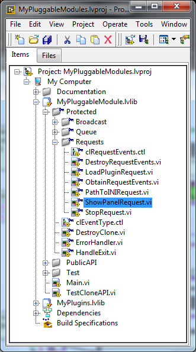
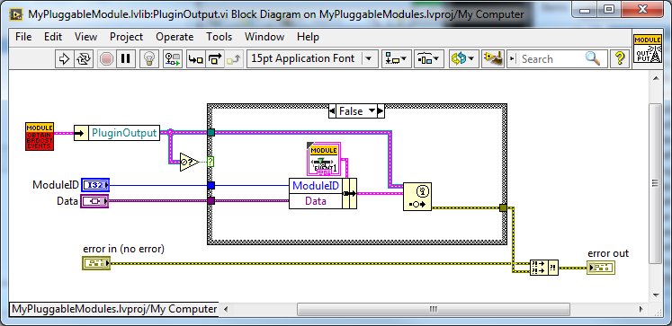

Appendix A Pluggable Module Reference¶
A pluggable module is a stand-alone module that can be launched by a framework or other application then runs independent of the launching application. Multiple clones of the same module type may be launched and will coexist independent of each other. Module clones receive requests from the launching framework or another application and broadcast responses to any application that has registered to receive the modules broadcasts.
Pluggability means that the module is able to support a wide range of user-defined functionality by loading one of a class of plug-ins. this allows modules to be, for example hardware abstracted versions of different test instruments with (for example) ISI compliant APIs. another example is creating a range of Matlab-based plug-ins where the module can perform many different types of operations. Plug-ins can be changed on-the-fly during runtime without needing to stop and restart the module clone.
- Quick Start
To get a quick overview of how pluggable modules work, use the TestCloneAPI.vi application:
{kind=link}
Figure : LabVIEW Project showing TestCloneAPI.vi
TestCloneAPI.vi is an application that can be used to test the modules application programming interface (API) as it is being developed. It provides example controls for launching multiple clones, loading plugins and requesting a plugin’s .ini file path. This is a good application for a programmer to add controls to test module functions as they are being added. It is not a good example of a test framework which should be based on a producer consumer pattern.

Figure : TestCloneAPI.vi front panel
Using TestCloneAPI you can see how a clone is launched and removed, how plugins are loaded or changed, and how a simple requests such as showing or hiding the clone’s front panel or requesting the path to the current plugin’s .ini file is sent to one or all clones. When multiple clones are launched, the “Select Module to send request listbox will allow requests to be sent to one or all modules.
- Launching a Module Clone
A framework application launches a clone of a module by passing a reference to the module Main.vi to the StartClone.vi which launches the clone. StartClone.vi outputs a cluster of the clone’s broadcast events so they can be registered to allow the framework to receive broadcasts from the clone. To be sure that the clone is ready to accept requests from the framework, the ModuleAdmin class method WaitOnEventSync.vi waits for a semaphore from the new clone indicating that the clone is ready to accept requests. Following that, the semaphore reference must be destroyed by ModuleAdmin:DestroySyncRefnums.vi

- Module Top Level: Main.vi
The Main.vi is the top level of the pluggable module. The path to Main.vi is used by a framework which launches clones of the module to load and run the module clone. Main.vi is organized as a queued message handler (QMH) pattern which can also be considered a producer consumer pattern. After creation of a new ModuleAdmin class instance (see the documentation for the ModuleAdmin library), initialization of request events and user events, and initialization of the queue to be used for the QMH, two while loops are started. The upper loop is the event handler loop (the producer) and the bottom loop is the queued message handler (the consumer).

Figure : Top Level: Main.vi
- Start-up and initialization

Figure : Module start up
The launching application passes in a new ModuleAdmin reference and the new clone is added to the ModuleAdmin CloneRegistry. For more information on the ModuleAdmin class see the ModuleAdmin documentation. The next thing that happens is a set of request events and broadcast events are initialized. the events are registered with the module. Finally a queue is initialized and the Event Handler Loop and QMH loop are started. When the Queue was initialized, an “Initialize” message was placed in the Queue, so the Initialize state of the QMH will run immediately.
{kind=link}
Figure : QMH “Initialize” state
Normally, a module will only be launched by a framework or application, but they can be launched manuallyy as well. If launched manually, ModuleAdmin:External Launch will be FALSE and the frontpanel will be visible. If launched by an application, External Launch is TRUE and if ShowPanel_ is FALSE, the module frontpanel will be hidden (this is the typical condition when using modules because they will not usually have front panel controls. The fornt panel is set up then the module synchronizes with the launching application using the ModuleAdmin:WaitOnModuleSync and WaitOnEventSync methods. Finally the module broadcasts a status message indicating to all applications registered to receive broadcasts that it has initialized.
- Requests
- Handling Requests

Figure : Responding to the ShowPanel Request
Requests are user events generated by a framework or application and received by the module’s event handler loop. In Figure 6 a ShowPanel event is shown in the event structure. The event carries the ModuleID and a variant that can handle any type of data. The ModuleAdmin:AddressedToThisModule method determines if the requests ModuleID is -1 (all modules) or matches the ModuleID of this module. If either of these are true, the “ShowPanel” command is enqueued into the QMH’s ques along with the data variant.
In the QMH loop, when a command is found in the queue, it is input to the QMH’s case statement. In Figure 6, the ShowPanel case is called and the varient data is cast to a boolean value. Each command state should know what datatype to expect so, for those commands with data, the first thing that normally happens is the data variant is cast into the appropriate datatype.
- Creating New Request Types
To create a new request type, begin by editing the clRequestEvents.ctl typedef:
 |
 |
Figure : clRequestEvents Typedef
Copy one of the existing event references and rename it to the name of your new request. Save or apply changes to the typedef.
If the data type is a cluster, or something other than a LabVIEW primitive representation (string, double, etc) or array of primitives, you will probably want to create a Typedef for the data type. The typedef will need to have public access so a good place to put it would be in PublicAPI/Arguments/Requests:

Figure : PublicAPI/Arguments/Requests
Next, add an event case to the event handler loop. For many of the new events, you can duplicate and modify another event such as the “ShowPanel” event. Because you have saved a new request reference to the clRequestEvents typedef, that event will now appear as one of the choices for the new event.

Figure : Adding an event case to the Event Handler Loop
When an event is generated by a framework or other application, the data to be sent is flattened to a Variant type and sent to the event “Data” pipe. The ModuleID is also sent along with the data. The ModuleID is wired into a ModuleAdmin:AddressedToThisModule method and that in turn to the selector of a case statement. Sometimes, a simple handler can be written into the case statement, and sometimes a QMH command should be created. The data variant type is wired into the Enqueue method and outputs from the Dequeue method in the QMH loop. It will need to be unflattened from the variant type to the data type using the typedef you created earlier (or the LabVIEW primitive or array of primitives if you did not need to make a typedef.)
Next, a Request method will need to be created to be used by a framework or other app to generate the new request. Typically, you can start from an existing request method such as the ShowPanelRequest shown below:
|  |  |
{kind=link}
Figure : ShowPanelRequest example
Change the cluster unbundle on the output of ObtainRequestEvents method the to your new request name, then replace the data input with a control for your data type and save the request with a new name in Protected\Requests. When you use the request in a framework or other app, the framework library will need to be a “friend” of the PluggableModule library.
An example of how to make a request to a module is shown in the TestCloneAPI application. note again that it is recommended that a framework be constructed as a Queued Message Handler and the TestCloneAPI is a very simple test app:

Figure : Simple example of making a module request
A boolean toggle on the fron panel of the TestCloneAPI application triggers an event, the active module number is placed into the ShowPanelRequest ModuleID input and the new value of the toggle is placed into the data input. the request event is generated and the pluggable module responds by showing or hiding its frontpanel.
- Broadcasts
Similar to Requests, Broadcasts are user events. Broadcasts are generated inside the pluggable module and may be received by the framework or any application that registers to receive them. Multiple applications can receive the broadcasts at the same time. When a broadcast is generated, the broadcast data is placed into a separate queue for each application that is registered to receive the broadcast.
- Creating new broadcast types
To create a new broadcast type, begin by editing the clBroadcastEvents.ctl typedef:
 |
 |
Figure : clBroadcastEvents.ctl typedef
Copy one of the existing event references and rename it to the name of your new broadcast. Save or apply changes to the typedef.
If the data type is a cluster, or something other than a LabVIEW primitive representation (string, double, etc) or array of primitives, you will probably want to create a Typedef for the data type. The typedef will need to have public access so a good place to put it would be in PublicAPI/Arguments/Broadcasts.
Next, create a new broadcast method. The best thing to do is to make a copy of an existing broadcast method:
 |
 |
Figure : Broadcast Method
Change the cluster unbundle on the output of ObtainBrodcastEvents method the to your new request name, then replace the data input with a control for your data type and save the broadcast with a new name in Protected\Broadcasts. Quite often, a broadcast will be generated in response to a request. An example of the PathToPlugin broadcast in response to a PathToIni request is shown below:

Figure : Example of a broadcast in response to a request.
- Plugin Classes
Plugins are abstracted classes that do the core work of any module. Abstracted means that plugins can be created to perform similar operations for which an application programming interface (API) has been created using different hardware, computer languages, or procedures. Here are some examples of how plugins can be used:
- Modules can be created supporting IVITM (http://www.ivifoundation.org/) compliant APIs with plugins supporting a variety of hardware. New hardware can later be added to support the same instrument functionality.
- Generic modules can be created with a common API for various system models and plugins for each system can be created. An example is an event on the electrical power system. plugins can be created to model different kinds of events on different power system topologies, for example a phase step transient in an IEEE Bus model may be one plugin, while a Line to line fault on an existing model of a section of an actual power system may be another plugin.
- Measurement algorithms can be created as plugins. For example a Phasor Measurement Unit module can support different plugins for algorithms such as frequency tracking or non-frequency tracking.
Plugins can be created to support computer languages such as Matlab, Python, any of the C variants, etc. Users can then create new plugins without needing to know anything about Labview programming.
A new plugin consists of:
- A child class of the PluginsBase Class
- A .ini file providing a relative path to the plugin child class and a name for the Plugin Type. The init file can also contain other information such as default configuration and parameter values. The path to the .ini file is available to the framework or any application via a module request/broadcast.
- Any plugin method overrides created by the plugin designer.
- Plugin Methods
The work of the plugin is done by plugin methods. You will create a set of plugin methods in the base class that throw an error because base class plugins methods should always be overridden by child class methods. LabVIEW requires that overridable methods have Public Access. You will likely create public methods to write and read plugin parameters and/or configuration information and to get plugin output. A variant datatype property has been added to the BasePlugin properties as an example. This can later be changed to another typedef for your BasePlugin. You will likely add other parameter and configuration properties to the BasePlugin based on the typedefs you create for those data types.
 |
 |
Figure : Sample “PluginOutput” variant datatype added to BasePlugin properties
- Creating an new base plugin method
Most plugin methods will be “must override” methods in the Base Plugin. The entire collection of base plugin methods can be considered as the “API of the plugin. New plugins will override these methods to provide the abstracted functionality of the module. As an example, here are the steps that go into creating the sample “PluginMethod” Generally plugin methods will be evoked by a request and will generate a broadcast, so begin by creating new requests and broadcasts per sections 4.2.2 and 4.3.1:
 |
 |
Figure : PluginOutput request and broadcast have been added to the typedefs
Create the Request and Broadcast vis:
 |
 |
{kind=link}
Figure : Request and Broadcast VIs
Create a plugin base class method that throws an error if it is not overridden. The base object class provides a good error module to use:

Figure : Example Base Plugin Method throws an error if called
This method must have public assess. The class input and output terminals must be dynamic.
Next, add an event handler and QMH loop case to the modules “Main.vi to handle the request event and run the base plugin method:

Figure : Event Handler and QMH case for the new method
The QMH handler calls the GetOutput method which will put the output into the PluginOutput method. If the method does not throw an error (for example by calling the Base Class method) PluginOutput property is input to the PluginOutput broadcast vi along with the ModuleAdmin:ModuleID property. Optionally, the handler broadcasts a status message that the output has been transmitted. This status broadcast is useful for logging or debugging the framework or other applications.
You will want to test each method you add to the modules API so add a button that sends the request to the TestCloneAPI application:

If you run the TestCloneAPI, add a clone and press the GetPluginOutput button, you will get the following expected error:

Figure : the error you will get if you call a BasePluginClass method that has not been overrridden
Next you will create a child plugin class and override the method.
- Creating a new Plugin Child Class
Begin by creating a new class and setting it to inherit from the BasePlugin class:

Figure : Creating a new Plugin child class
Under the properties for the new class, change the inheritance to the BasePluginClass:

Figure : Setting the inheritance of the child plugin class
Create new overrides for all plugin methods you may have created in the base plugin class:

Edit the override vis for the special functionality of the plugin. for the example Module Output method, we will simply broadcast a string:
{kind=link}
Figure : Override for the GetOutput method
We chose to make the PluginOutput property into a variant to we are putting a string into the variant. We could have chosen to make the property a string type (or any other typedef or primative).
Next create a plugin .ini file that contains a relative path to the plugin “lvclass” file and a name for the plugin type:

Figure : Sample Plugin .ini file
The SamplePlugin child class only has an empty property control. A .ini file, and overrides for the base plugin methods:

Now when you run the TestCloneAPI, Add a Clone, select the Sample Plugin, load the Plugin, then Get the Plugin Output, the ModuleOutput indicator will show the string that came from the Sample Plugin method.